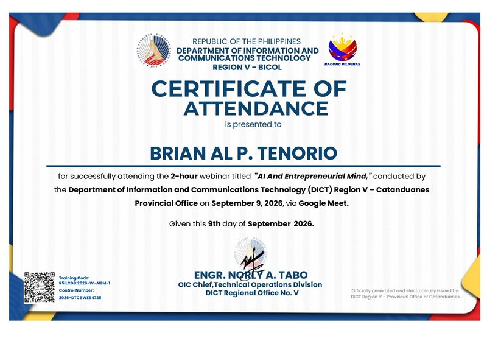
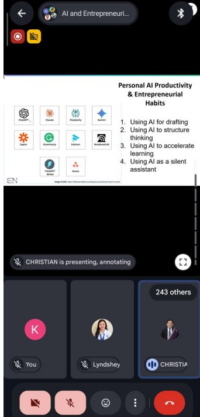
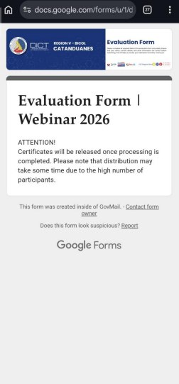
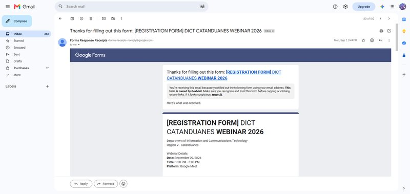

AI and Entrepreneurial Mind
A two-hour DICT Region V webinar on using AI tools and everyday habits to work, learn and build a business more productively.
- Date
- September 9, 2026
- Time
- 1:00 – 3:00 PM
- Duration
- 2 hours
- Speaker
- Christian Narito
- Organizer
- DICT Region V – Catanduanes Provincial Office
- Platform
- Google Meet (online)
- Control number
- 2026-DTCBWEB4725
- Training code
- R5ILCDB:2026-W-AIEM-1
Certificate of attendance


Narrative report
On September 9, 2026, from 1:00 to 3:00 in the afternoon, I attended the two-hour webinar “AI and Entrepreneurial Mind,” conducted by the Department of Information and Communications Technology (DICT) Region V – Catanduanes Provincial Office via Google Meet. I registered two days earlier through the DICT Catanduanes Webinar 2026 registration form and joined the session, which was led by resource speaker Mr. Christian Narito and attended by more than two hundred participants. After the webinar, I completed the DICT evaluation form and received a Certificate of Attendance from DICT Region V.
The webinar focused on how artificial intelligence can make students, professionals and entrepreneurs more productive. The speaker presented a practical toolkit: ChatGPT, Claude, Gemini and Perplexity for writing and research, NotebookLM for organizing study materials, Grammarly and ChatGPT Writer for polishing text, Fathom for meeting notes, and Zapier and Asana for automating tasks and managing projects. He grouped their use into four personal productivity and entrepreneurial habits: using AI for drafting, using AI to structure thinking, using AI to accelerate learning, and using AI as a silent assistant. My key takeaway is that AI works best as a partner that handles first drafts and routine work, while the person stays responsible for the ideas, the decisions and the quality of the final output.
These habits apply directly to IT practice. In system administration and maintenance, AI can produce first drafts of documentation, standard operating procedures and incident reports for a technician to review, a meeting assistant can capture action items from team meetings, and automation tools can route help-desk requests or send scheduled maintenance reminders. For community projects, students could hold short workshops for local micro, small and medium enterprises on using free AI tools for product descriptions, simple marketing posts and record-keeping, while reminding them not to upload sensitive business or customer data and to always check what the AI produces.
Photo documentation




Proof of registration

